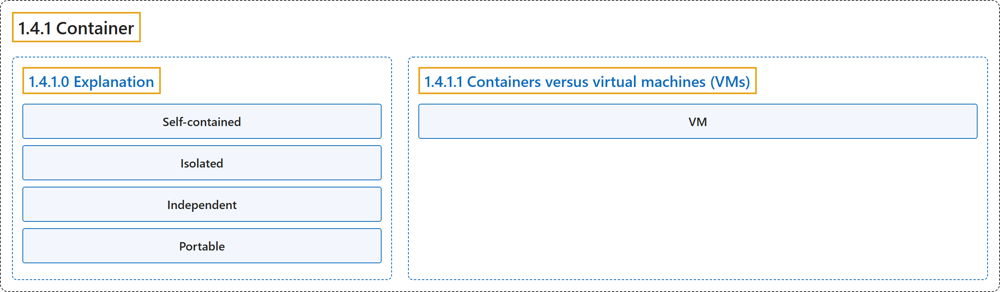

1.4.1 Container
Classification

Glossary
| Term | Definition | 中文翻译 | Source |
|---|---|---|---|
| 1.4.1 Container 容器 |
"Simply put, containers are isolated processes for each of your app's components." | 简单地说，容器是隔离的进程，对应应用的每个组件。 | Docker Inc., n.d., "Explanation", para. 5 |
| 1.4.1.0 Explanation 说明 |
(No definition) | （无定义） | Docker Inc., n.d., "Explanation" |
| Self-contained 自包含 |
"Self-contained. Each container has everything it needs to function with no reliance on any pre-installed dependencies on the host machine." | 自包含。每个容器都拥有运行所需的一切，因而不依赖主机上预装的任何依赖项。 | Docker Inc., n.d., "Explanation", para. 7 |
| Isolated 隔离 |
"Isolated. Since containers run in isolation, they have minimal influence on the host and other containers, increasing the security of your applications." | 隔离。由于容器在隔离中运行，它们对主机和其他容器的影响极小，从而提高应用的安全性。 | Docker Inc., n.d., "Explanation", para. 8 |
| Independent 独立 |
"Independent. Each container is independently managed." | 独立。每个容器都被独立管理。 | Docker Inc., n.d., "Explanation", para. 9 |
| Portable 可移植 |
"Portable. Containers can run anywhere!" | 可移植。容器可以在任何地方运行！ | Docker Inc., n.d., "Explanation", para. 10 |
| 1.4.1.1 Containers versus virtual machines (VMs) 容器与虚拟机（VM） |
"A container is simply an isolated process with all of the files it needs to run." | 容器只是一个隔离进程，带有运行所需的全部文件。 | Docker Inc., n.d., "Containers versus virtual machines (VMs)", para. 2 |
| VM 虚拟机 |
"Without getting too deep, a VM is an entire operating system with its own kernel, hardware drivers, programs, and applications." | 不深入细节地说，虚拟机是一个完整的操作系统，拥有自己的内核、硬件驱动、程序和应用。 | Docker Inc., n.d., "Containers versus virtual machines (VMs)", para. 1 |
References
Docker Inc. (n.d.). What is a container? Docker Docs. Retrieved October 31, 2026, from https://docs.docker.com/get-started/docker-concepts/the-basics/what-is-a-container/